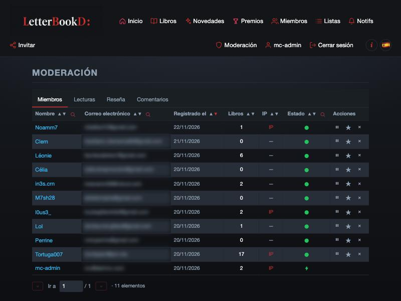
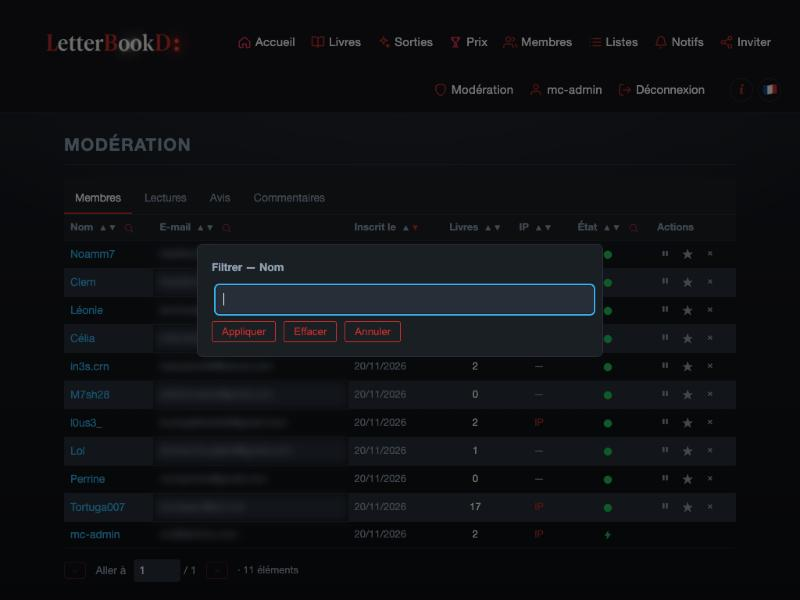

Moderación — Miembros Solo administradores

Recorrido
Cuatro pestañas arriba: Miembros (aquí), Lecturas, Reseñas y Comentarios. La tabla de miembros muestra para cada cuenta: Nombre (nombre de usuario, en el que se puede hacer clic para abrir el perfil), Correo (en texto claro en la aplicación), Registrado el (fecha), Libros (número de lecturas), IP (distintivo rojo «IP» si se ha registrado una dirección sospechosa; guion si no) y Estado (punto verde = activo, rayo verde = administrador). La columna Acciones ofrece tres botones de icono por fila: pausa (suspender), estrella (conceder o retirar derechos de administrador) y cruz (eliminar). Cada columna se puede ordenar (▲▼) y filtrar mediante el icono de lupa, que abre la ventana de filtro.
Cadenas de acción
Cada fila describe un disparador en la interfaz, el modal o formulario que abre, y el efecto producido.
| Disparador | Modal / Campos | Efecto |
|---|---|---|
| Pestañas Miembros / Lecturas / Reseñas / Comentarios | Navegación mediante ?tab=… | Cambia la vista sin recargar la página completa. |
| Flechas ▲▼ en un encabezado de columna | — | Ordena la columna de forma ascendente (▲) o descendente (▼). El orden queda guardado en la URL. |
| Icono de lupa en un encabezado de columna (abre la ventana Filtro) | Ventana con campo de texto «Filtrar — <columna>» y botones «Aplicar», «Borrar» y «Cancelar». | Filtra la tabla por la columna elegida. «Borrar» quita el filtro. Se pueden filtrar varias columnas a la vez. |
| Botón pausa (||) en una fila de miembro | Formulario POST de confirmación. | Suspende la cuenta: el miembro ya no puede iniciar sesión ni publicar. Se puede reactivar más tarde con el mismo botón. |
| Botón estrella (☆/★) en una fila de miembro | Formulario POST. | Concede o retira los derechos de administrador (is_staff + is_superuser). El rayo verde de la columna Estado refleja el cambio al instante. Si un administrador se retira sus propios derechos, pierde el acceso a la moderación. |
| Botón cruz (×) en una fila de miembro | Formulario POST de confirmación. | Elimina definitivamente la cuenta y todos sus datos (lecturas, reseñas, comentarios, listas, invitaciones). Irreversible. |
| Pie de tabla: «Ir a [n] / X» y flechas | Paginación sencilla. | Navegación entre las páginas de resultados. |
Ventanas
